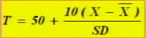

00:00
第二节 人格测验
第一单元 明尼苏达多项个性调查表（MMPI）
第二单元 卡氏16种人格因素测验（16PF）
第三单元 艾森克人格问卷（EPQ）
自陈量表
一.自陈量表的编制方法：
1.逻辑分析法（EPPS、JAS、MAS）
2.经验效标法（MMPI、CPI）
3.因素分析法（16PF、EPQ）
4.综合法（JPI）
二.自陈量表的题目形式：
1.是非式
2.折中是非式
3.选择式
4.文字等级式
5.数字等级式
06:46
第一单元 明尼苏达多项个性调查表（MMPI）
一、学习目标
掌握明尼苏达多项个性调查表的实施、记分及结果解释方法。
二、工作程序
(一)测验的实施
1.1943年明尼苏达大学 哈特卫、麦金利 经验效标法
2.中文版修订：宋维真 1989年
3.共包括566个自我报告形式的题目，其中16个为重复题。
4.如果只为了精神病临床诊断使用，可做前399题。
5.16岁以上成人被试，无影响测验结果的生理缺陷均可测试。
6.施测MMPI有两种主要形式：卡片式适用于个别施测；手册式即可个别施测，也可团体施测。
7.录音带形式，人机对话形式。
8.在进行测验前，主试者必须熟悉测验的全部材料，了解被试者的情况。
9.在开始测验时，首先要把问卷封面的指导语读给被试者听，并说明做完全部测验的大约多少时间。
10.测验开始后，主试者要看一下每个被试者是否在答案纸上把姓名、性别、住址等项填写好，所大题目号数与答卷上的题号是否符合，等等。
15:24
（二）.测验的记分
1.电脑记分，模板记分。
2.按被试性别分开。
3.直接数出Q的原始分数。若566题版本的超过30分，或399题版本超过22分，则答卷无效。
4.用套版数出其它量表的原始分数（记分键）
5.在5个量表的原始分数上分别加上一定比例的K分（Hs+0.5K、Pd+0.4K、Pt+1.0K、Sc+1.0K、
Ma+0.2K）
6.原始分换算T分（查表）
7.将各量表T分数（Hs、Pd、Pt、Sc、Ma为加K后的T分数)登记在剖析图上，各点相连即成为被试
者人格特征的（剖析图）。
（三）.结果解释：
1.只解释高分
2.美国常模：T > 70分
3.中国常模：T > 60分
22:49
三、相关知识
MMPI一共有566个条目，最常用的是前399个条目，包括14个分量表：其中10个为临床量表，4个为效度量表。
临床量表是：
1．Hs（Hypochondriasis） 疑病量表
2．D （Depression） 抑郁量表
3．Hy（Hysteria） 癔病量表
4．Pd（Psychopathic deviate） 精神病态量表 （病态人格）
5．Mf（Masculinity-femininity）男子气、女子气量表
6．Pa （Paranoia）妄想狂量表 （偏执妄想）
7．Pt （Psychasthenia） 精神衰弱量表
8．Sc （Schizophrenia）精神分裂症量表
9．Ma（Hypomania）轻躁狂量表
10．Si（Social introversion）社会内向量表
效度量表是：
1．Q（Question）疑问量表。不能回答的问题，或用“ ？”代表
2．L（Lie）说谎分数
3．F（Validity）诈病量表
4．K（Correction）校正分量表
25:48
（一）MMPI的临床量表及其意义。
1.疑病（Hs）：反映被试对身体功能的不正常关心，疑病症、神经衰弱、抑郁。
2.抑郁（D）：与忧郁、淡漠、悲观、思想与行动缓慢有关。分数高者可能会自杀，常被诊断为抑郁性神经症和抑郁症。
3.癔症（Hy）：用转换反应来对待压力或解决矛盾的倾向。表现为依赖、天真、外露、幼稚及自我陶醉，自知力不完整。
4.精神病态（Pd）：病态人格。反映被试者性格的偏离。高分数的人常常不遵从社会道德规范，蔑视社会习俗，常有复仇攻击的观念，且不能从惩罚中吸取经验教训。人格异常，反社会人格。
5.男子气-女子气（Mf）：主要反映性别色彩。极端的高分情况下，应考虑有性变态倾向或行为，同性恋。
28:20
6.偏执（Pa）：提示具有多疑、孤独、烦恼及过分敏感等。若>70分-存在偏执妄想，精神分裂症偏执型；偏执性精神病。
7.精神衰弱（Pt）：紧张、焦虑、反复思考、强迫思维、恐怖以及内疚感等，经常自责，感到不安。测量强迫、焦虑、恐怖等症状。
8.精神分裂症（Sc）：表现异乎寻常的或分裂的生活方式，如不恰当的情感反应、怪异行为、行为退缩与情感脆弱等。>80分者可表现妄想、幻觉、人格解体、行为异常等，精神分裂症。Sc高，F不高，类分裂性人格。
9.轻躁狂（Ma）：表现为联想过多过快、活动过多、观念飘忽、夸大而情绪高昂，情感多变。极高者表现为情绪紊乱、反复无常、行为冲动等，若>90分可考虑躁郁症的躁狂相。
10.社会内向（Si）：高分为内向、胆小、退缩，不善交际、屈服、过分控制、紧张、固执及自罪。低分为外向、爱交际、富于表情、好攻击、任性等。
31:40
（二）MMPI的效度量表及其意义：
1.Q量表：高分表示逃避现实。若在前399题中原始分超过22分，或566题中超过30分，则提示林城量表不可信。
2.L量表：是追求过分的尽善尽美的回答。L量表原始分超过10分，就不能信任MMPI的结果。
3.F量表：分数高表示被试者不认真、理解错误，或在伪装疾病。如果测验有效，F量表是精神病程度的良好指标。
4.K量表：是对测验态度的一种衡量，即用这个量表修正临床量表的得分，通过校正使得结果更为准确。
（三）对MMPI的评价
1.用于鉴别各种精神病求助者，与临床诊断的符合率较高。
2.首次将效度量表纳入个性量表，成为解释的组成部分，提高了诊断价值。
3.范森等人1984年编制成MMPI-168,经分析似乎表明MMPI-168更优于标准版本。
四 注意事项
1.进行测验之前，一定要让被试知道此测验的重要性以及对他的好处，以便被试合作。如果有的被试者仍然轻率从事或不愿暴露自己，主试者就要凭自己的经验尽可能弄清情况，做好工作，争取合作，并详细记录测验时被试的表现。
2.应该向被试者讲清楚，如果他遇到什么问题不能回答，可以空下来，但不要让空着的问题太多
3.如果被试者问到，有些想法以前有过，而现在没有了，该如何回答，可以告诉他目前的情况为准。
4.如果被试焦虑或情绪不稳定，经常表现出对完成这个任务不耐烦，这时可将测验分成几次完成